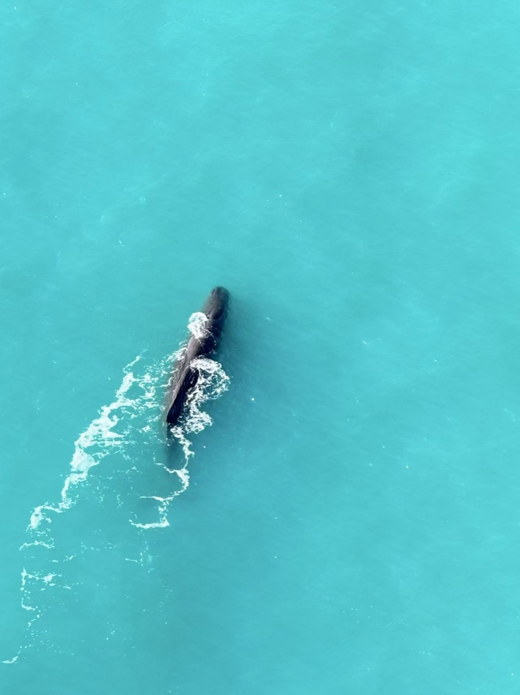
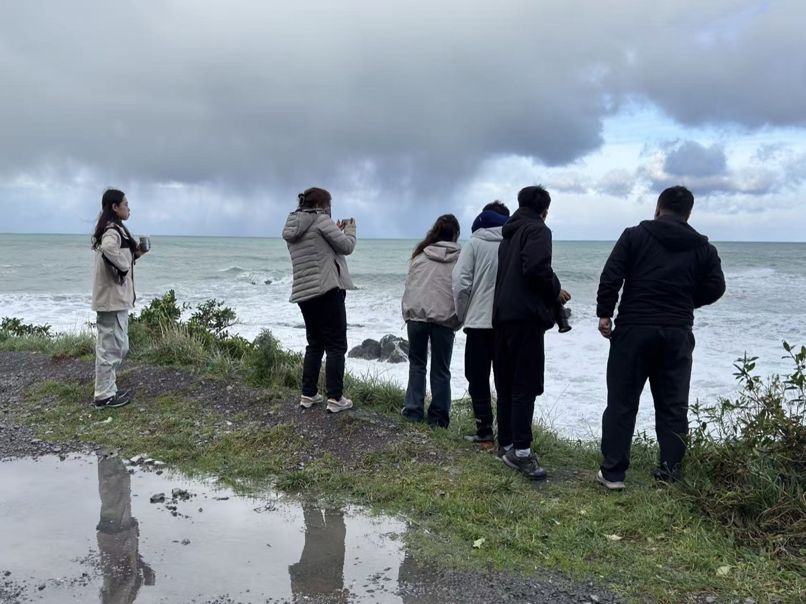

凯库拉
Kaikōura
Peter 说
很多游客来凯库拉是为了观鲸。但我更喜欢傍晚时分沿着海边散步。雪山、海浪和海豹同时出现在眼前，这是全世界都少见的风景。
South Island Story Map
十多年南岛生活与带团经历，让我认识了许多风景背后的故事。
这里不仅有雪山、湖泊与海岸线，还有毛利人的传说、淘金时代的历史、牧场与小镇的人情味。
希望通过这些故事，让你在出发之前，先认识真正的新西兰南岛。
Route 01
海洋与野生动物

Kaikōura
Peter 说
很多游客来凯库拉是为了观鲸。但我更喜欢傍晚时分沿着海边散步。雪山、海浪和海豹同时出现在眼前，这是全世界都少见的风景。

Akaroa
Peter 说
翻过班克斯半岛的山路，海面突然开阔，法式小港出现在眼前。我常会带客人慢慢走港湾一圈，看海豚在近处跃出水面——那一刻，大家都会安静下来。
Hanmer Springs
Peter 说
长途行车之后，泡一泡温泉是最自然的奖励。杉木环绕的池子里，热气升起来，人会真正慢下来。这里不是打卡点，是南岛生活里的小停顿。
Picton
Peter 说
很多人把皮克顿当作渡轮中转站。其实马尔borough峡湾的水面安静得像镜子，适合在清晨或傍晚走一走。我会告诉客人：别急着赶路，这里值得多留半天。
Marlborough
Peter 说
下午的阳光斜照在葡萄藤上，长笛白葡萄酒配一点当地奶酪，是北线最松弛的结尾。不是豪饮，而是坐在酒庄露台上，看云慢慢飘过。
Route 02
湖泊与星空

Christchurch
Peter 说
基督城是我生活的地方。雅芳河、植物园、重建后的新城市面貌，都在告诉我：南岛不只有荒野。带团出发或归来，我常会带客人沿河走一段，感受这座城市的呼吸。
Timaru
Peter 说
提马鲁常被路过，却很少有人停下来。卡罗琳湾的海岸线、老建筑与渔港的早晨，有一种不被打扰的东海岸气质。适合作为东线里一段安静的插曲。

Lake Tekapo
Peter 说
很多人只知道星空。其实冬天下雪后的特卡波，才是我最喜欢的样子。教堂、湖水与雪山，像一张安静的明信片。
Lake Pukaki
Peter 说
去库克山途中，普卡基湖的乳蓝色常常让人突然停车。我会选风小的早晨，湖面像一整块宝石，库克山在尽头——这是东线最值得放慢车速的一段。

Aoraki / Mt Cook
Peter 说
胡克谷步道走起来并不累，但雪山始终在眼前。天气变得很快，我会根据云层决定是进谷还是改去塔斯曼湖——尊重山，比赶时间更重要。
Twizel
Peter 说
这座小镇是三文鱼和暗空保护区之间的枢纽。晚上没有光污染，抬头就是银河。在这里住一晚，比连夜赶回大城市更能体会麦肯齐的辽阔。
Route 03
金秋与慢生活
Wanaka
Peter 说
瓦纳卡比皇后镇安静许多。湖边的孤独树、咖啡馆里的下午、远处雪山的倒影——这里适合什么都不安排，只是坐着看云移动。
Cromwell
Peter 说
秋天路过克伦威尔，路边果园的颜色会亮得惊人。停下车买一盒刚摘的樱桃或苹果，比任何纪念品都更接近南岛的日常味道。
Arrowtown
Peter 说
四月的箭镇，整条街像被点上了金色。淘金时代留下了建筑，但打动人的是傍晚的光——我会建议客人傍晚来，人少一些，颜色却最浓。
Glenorchy
Peter 说
公路尽头，瓦卡蒂普湖收窄，山与云压得很低。电影取景地很多，但我更爱这里的风声和空阔——像是南岛把最原始的一面留给了愿意多开半小时车的人。

Queenstown
Peter 说
皇后镇不只是冒险之都。如果愿意慢下来，坐在湖边喝杯咖啡，看看远处的雪山，你会发现另一种皇后镇。
Route 04
冰川与原始森林

Fox Glacier
Peter 说
从雨林走到冰舌脚下，只有几分钟车程，却是两个世界。西线下雨是常态——雨声里的冰川，反而有一种原始的力量感。
Franz Josef Glacier
Peter 说
小镇很小，步行就能走完。晚上泡个温泉，白天看云绕着冰川移动——西线的节奏，就是跟着天气走，不跟行程表较劲。
Hokitika
Peter 说
绿玉、浮木艺术、狂野的西海岸日落。霍基蒂卡不精致，但真实。我会在海滩上走一段，听浪声——这是南岛西海岸最本真的声音。
Pancake Rocks
Peter 说
一定要看涨潮。海水从岩石缝里喷起来，像自然在呼吸。我会算好时间带客人到，几分钟的奇观，比很多「必去清单」更值得记住。
Greymouth
Peter 说
西海岸公路的起点或终点。工业与海洋并存，不如特卡波上镜，却是许多南岛人真实生活的地方。从这里理解西线，会多一层厚度。